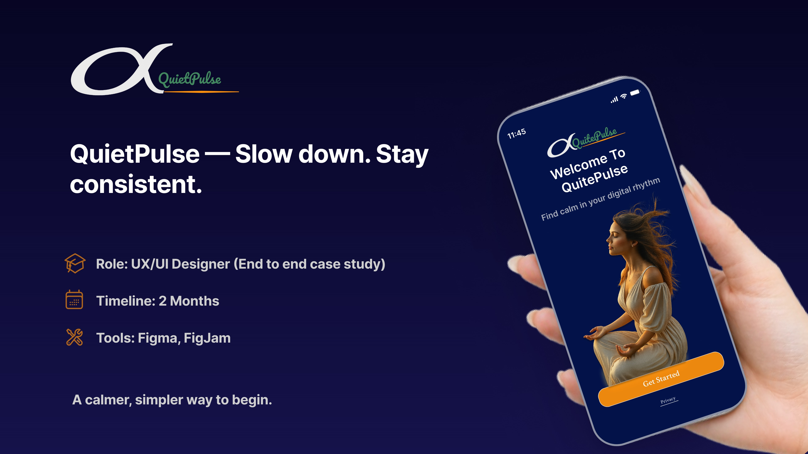

Featured Project
Claribench
A business analytics product refined around clarity, data confidence, and premium visual hierarchy.
Mamta Rani · Product Designer (UX/UI)
Simplifying complex workflows through clear, user-centered product design.
A business analytics product refined around clarity, data confidence, and premium visual hierarchy.

A warm cafe ordering experience with clearer navigation and a more confident journey.

A calm meditation app that reduces decision overload and supports a gentle daily ritual.
A focused meditation experience built around calm, clarity, and fewer decisions.
Users felt overwhelmed by too many meditation options and struggled to start quickly.
I simplified the flow, reduced decisions, and created a quieter visual hierarchy.
The app feels calmer, easier to enter, and more supportive for daily practice.
A warm cafe website focused on browsing, ordering, and clear next steps.
The menu and ordering path needed clearer structure for quick customer decisions.
I simplified navigation and shaped the content around scanning and ordering.
The final experience feels easier to browse and more direct for cafe visitors.
An analytics product refined to make complex insights feel premium, calm, and easy to act on.
Users needed fast access to analytics without clutter or confusing data overload.
I simplified the dashboard hierarchy, prioritized key metrics, and sharpened the visual system.
The final experience feels more premium, easier to scan, and better aligned with business goals.
I’m a UX/UI designer focused on crafting thoughtful, user-centered product experiences. I simplify complexity through clear structure, intuitive flows, and a refined visual language. With a background in fashion design, entrepreneurship, and marketing, I bring a strong sense of aesthetics, user understanding, and business thinking into my work.
Available for UX/UI design roles, product design projects, and creative collaborations.